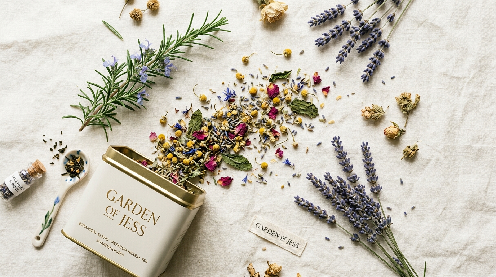
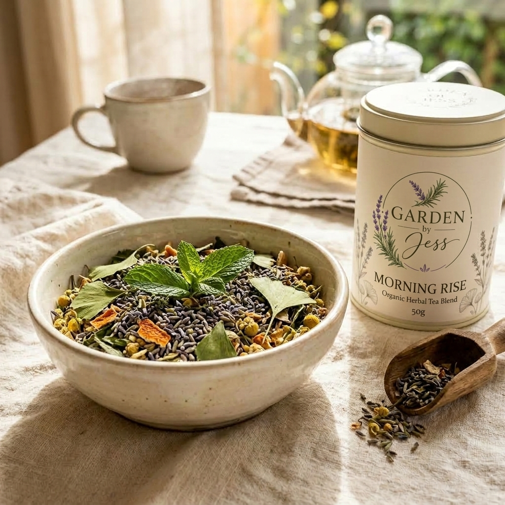
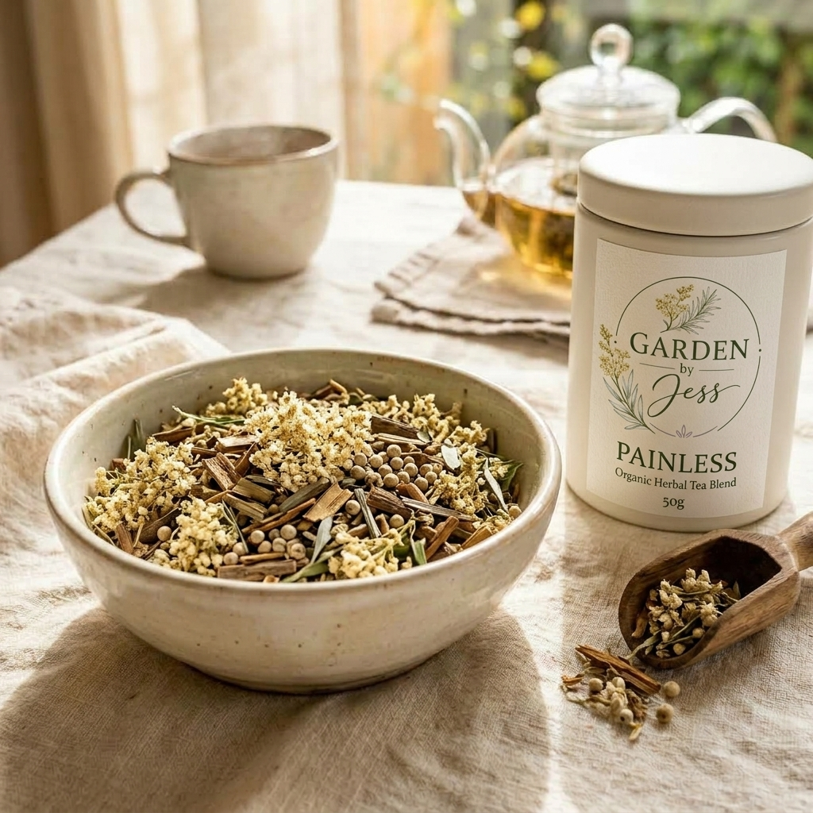
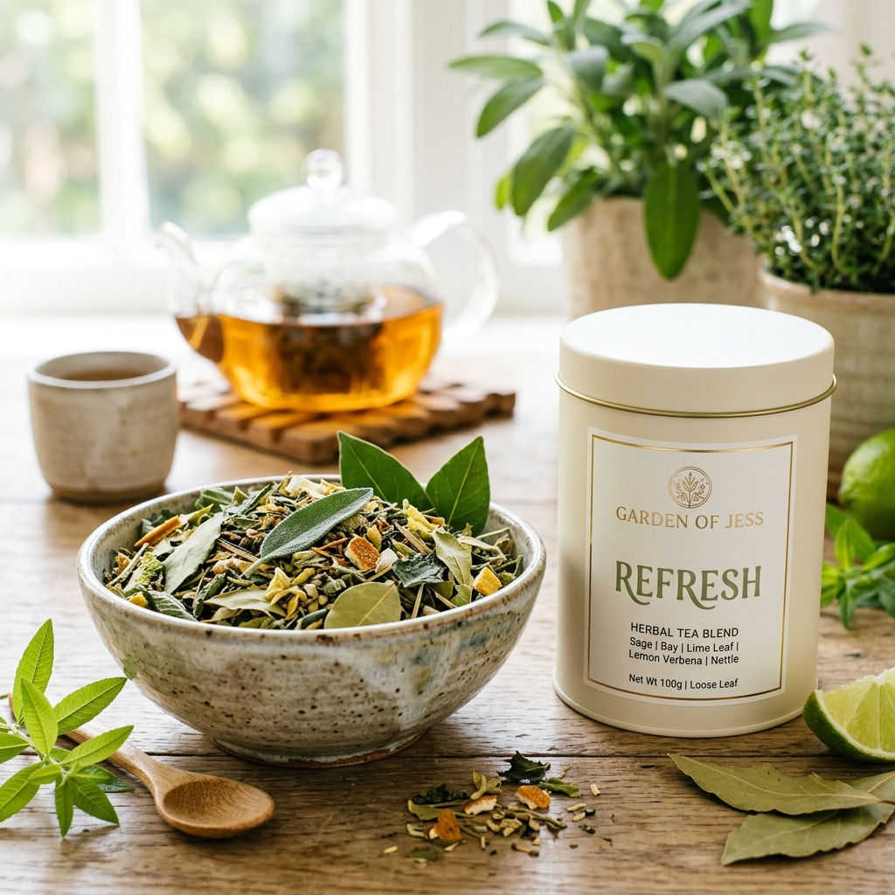
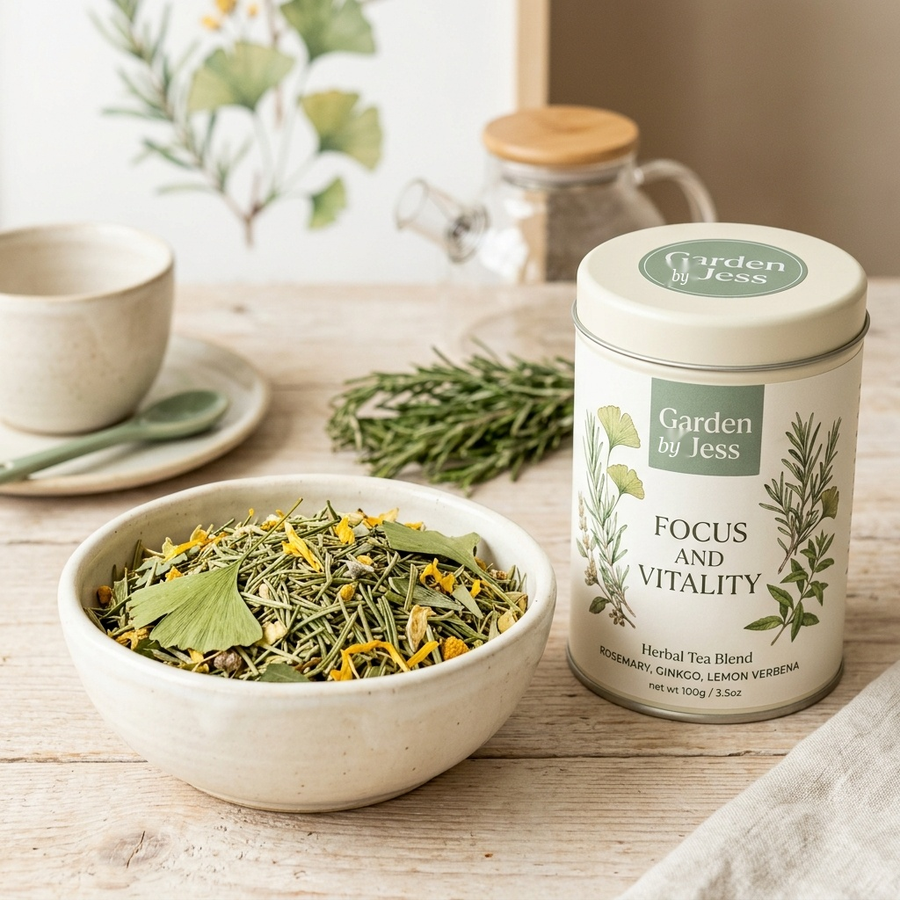
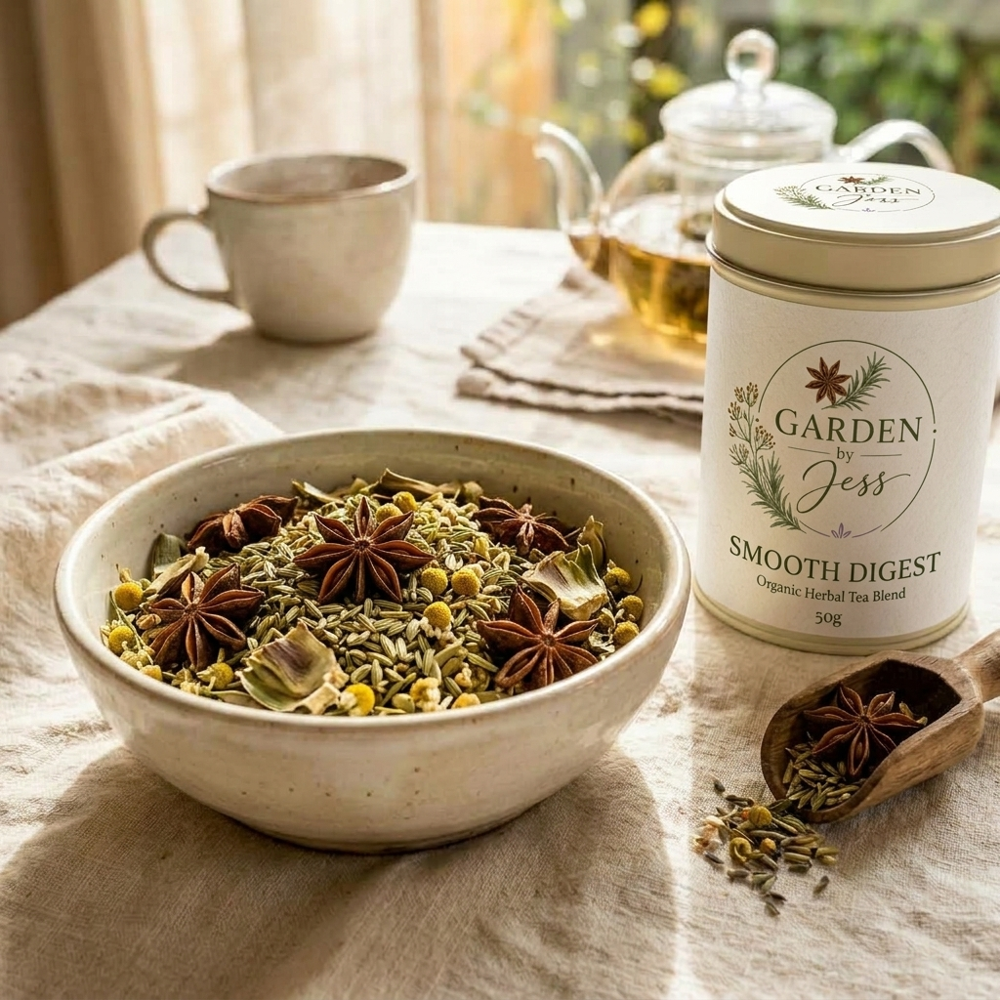
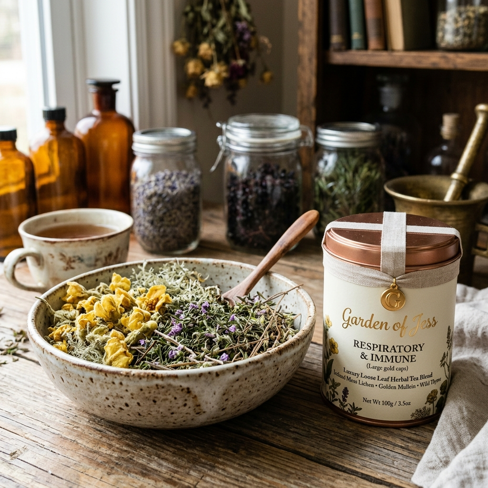
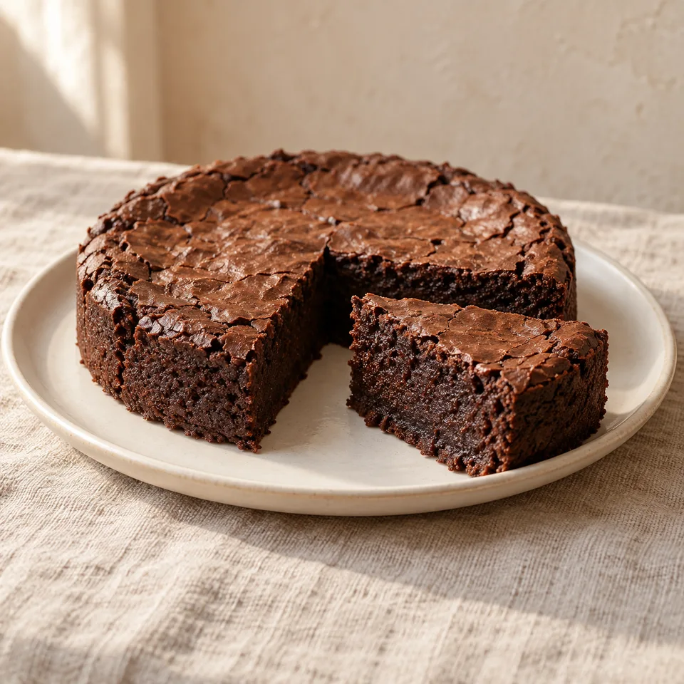

GARDEN BY JESS — KRUIDEN & KLEINE RITUELEN
Van frisse munt en zachte lavendel tot warme venkel en steranijs. Ontdek zes kruidentheemelanges van Jess, voor uw eigen moment van aandacht. 50 gram · €7,95 per melange.

Eerlijk geprijsde 50g porties voor toegankelijk dagelijks theegenot.
Hersluitbare stazakjes die licht, vocht en zuurstof afsluiten om alle geur te bewaren.
Kruiden geteeld zonder bestrijdingsmiddelen, zo puur en natuurlijk mogelijk.
Composteerbare folies en ongebleekt kraftpapier. Geen microplastics.
Zes unieke theemelanges in vershoudende 50g aromazakjes voor slechts €7,95 per stuk. Kies uw favoriete smaakbeleving:

Een frisse en zachte kruidenmelange om de dag mee te beginnen. De levendige tonen van munt worden mooi afgerond door de bloemige zachtheid van lavendel.

Een krachtige, kruidige melange met een bijzonder karakter. Moerasspirea en wilgenbast zorgen voor een diepe, aardse basis, terwijl witte peper subtiele warmte toevoegt.

Salie en laurier zorgen voor een kruidige diepte, terwijl limoenblad en citroenverbena een sprankelende frisheid brengen. Heermoes en brandnetel geven een zuiver groen karakter.

Een warme en aromatische melange met een bijzonder rijke smaak. Olijf- en berkenblad vormen de basis, rozemarijn brengt mediterrane kruidigheid en cacaoboon subtiele rondheid.

De zachte bitterheid van artisjok en duizendblad wordt prachtig gecombineerd met de zoete, warme tonen van steranijs en venkel voor een ontspannen theemoment.

Koningskaars en ijslandsmos geven een zachte basis, terwijl dropplant en wilde tijm zorgen voor een kruidig en fris karakter. Rode klaver maakt de blend mooi rond.
Wilt u weten welke actieve inhoudsstoffen (zoals cynarine, salicylaten, flavonoïden en menthol) er in uw thee zitten? Bekijk onze complete botanische encyclopedie met traditionele werkingen, smaak- en aromaprofielen.
Commerciële theezakjes uit de supermarkt bevatten vaak machinaal verpulverd theegruis (‘fannings & dust’). Door deze extreme blootstelling aan zuurstof verdampen vluchtige aroma's en etherische oliën binnen enkele weken.
HET VERHAAL ACHTER UW KOPJE
Een verhaal van liefde voor de natuur, kruiden en kleine momenten van genieten.
Garden by Jess is ontstaan vanuit een diepe liefde voor de natuur en de bijzondere wereld van kruiden.
De natuur heeft altijd iets bijzonders gehad: de geur van kruiden, bloemen die bloeien, planten die zomaar in het wild groeien en de rust die je ervaart wanneer je bewust stilstaat bij wat de natuur ons geeft.
Vanuit die liefde ontstond mijn passie voor het verzamelen en gebruiken van kruiden. Een deel van de kruiden wordt met zorg en respect uit de vrije natuur geplukt, waarna ik ze zorgvuldig droog en verwerk. Andere kruiden komen rechtstreeks uit mijn eigen kruidentuin, waar ik ze zelf laat groeien en verzorg.
Ik werk hierbij zonder bestrijdingsmiddelen, zodat de kruiden zo puur en natuurlijk mogelijk blijven. Ik vind het belangrijk om te weten waar mijn kruiden vandaan komen en om het hele proces – van plant tot gedroogd kruid en uiteindelijk tot thee – met aandacht te verzorgen.
Vanuit deze passie ontstonden de verschillende Garden by Jess-theemelanges. Iedere melange heeft een eigen karakter, smaak, geur en verhaal.
Met Garden by Jess wil ik een stukje van mijn liefde voor de natuur delen. Een kop thee is voor mij meer dan alleen een drankje: het is een klein moment van rust, warmte, genieten en verbinding met de natuur.
🌿 Met liefde uit de natuur, samengesteld door Jess.

AI-sfeerbeeldONTDEK OOK DE ZOETE KANT VAN JESS
Naast haar kruidenthee maakt Jessica thuis aan de Voorkamp 14 in Beets ook twee soorten chocoladetaart: puur en zacht. We bezorgen aan huis binnen een straal van circa 20 km (o.a. Hoorn, Purmerend e.o.). Ophalen kan thuis in Beets of bij Bio Rosa in Purmerend.
Ontdek Homemade by Jess ↗Taarten aanvragen via WhatsApp (06 4161 5544) of e-mail. Prijs, datum en afhalen of bezorgen in overleg.
Meer dan 1.428 geverifieerde reviews van bewuste theedrinkers en fijnproevers.
"Morning Rise is de ideale start van mijn ochtend. De frisse munt combineert prachtig met de zachte lavendel. Heerlijk zuiver en voor €7,95 een fantastische kwaliteit."
"Painless heeft zo'n bijzondere, krachtige smaakdiepte. De aardsheid van wilgenbast met een warme pepertoets zorgt voor een heerlijk ontspanmoment."
"Smooth Digest na het eten is een vast ritueel geworden. De zachte bitterheid van artisjok met zoete venkel en steranijs brengt direct rust in de buik."
Al onze natuurlijke kruidentheemelanges en verse chocoladetaarten worden met de hand bereid in het thuisatelier van Jessica aan de Voorkamp 14 in Beets.
Alles wat u wilt weten over onze 50g zakjes, zettemperaturen, verpakking en garantie.
Over de omschrijvingen & Veiligheidswaarschuwing (conform Monografieën):
De teksten op deze website zijn bewust geschreven als sfeervolle productomschrijvingen van smaak, geur en beleving. Wij maken geen medische claims. Waar gesproken wordt over kruiden, betreft dit traditioneel gebruik en geen geneeskrachtige werking. Onze theeën zijn voedingsmiddelen en geen geneesmiddelen.
Belangrijke contra-indicaties & interacties:
• Wilgenbast (*Salix alba*) & Moerasspirea (*Filipendula ulmaria*) in Painless: Bevatten natuurlijke salicylaten (aspirine-verwanten). Absoluut niet gebruiken bij overgevoeligheid voor aspirine/salicylaten, maagdarmzweren, stollingsafwijkingen of door kinderen en jongeren onder 16 jaar (risico op het syndroom van Reye).
• Ginkgo biloba in Morning Rise: Beïnvloedt de bloedstolling. Niet gebruiken in combinatie met bloedverdunners of aspirine/NSAID's zonder toezicht van uw behandelend arts.
• Rode klaver (*Trifolium pratense*) in Breath Free: Bevat fyto-oestrogenen; vermijden bij hormoongevoelige aandoeningen.
Raadpleeg bij zwangerschap, borstvoeding, medicijngebruik of onderliggende aandoeningen te allen tijde uw behandelend arts of herborist.